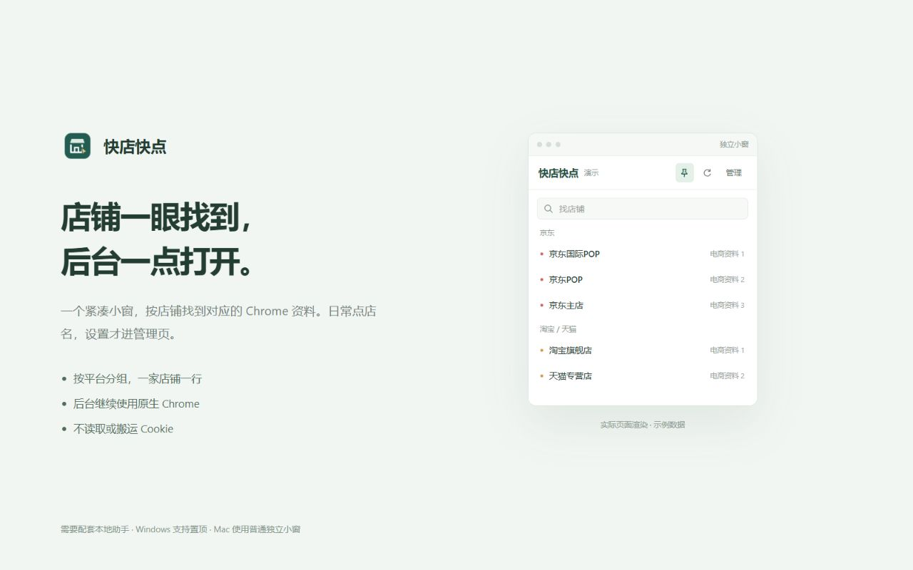
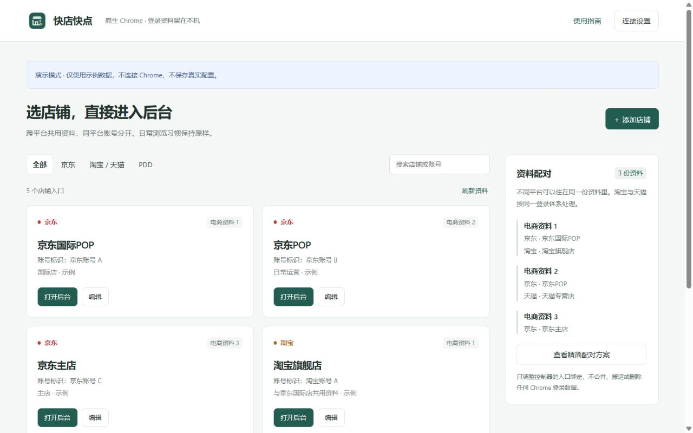

资料少一点
3 个京东账号 + 2 个淘宝账号，可规划为 3 份资料。不同体系可复用，同体系不同账号分开；淘宝与天猫按同一体系处理。
MIT 开源 · 1.0.0 公开测试版
不用再从一长串 Chrome 头像里找入口。
把京东、淘宝／天猫、拼多多后台，放进一个紧凑小窗。
保留原生 Chrome · 不读取或搬运 Cookie · Windows 可置顶 / Mac 普通小窗

这是 GitHub 公测，不是 Chrome 商店版。扩展需要手动加载，助手另行安装。目前助手未做 Windows 代码签名、Mac 签名／公证；Mac 包由交叉构建生成，未在真实 Mac 上完成运行验收。真实 Chrome 联调、Windows 置顶和 GPT 跨资料控制也仍需实测。
系统可能提示未知发布者或阻止运行。请核对来源、文件摘要并遵循设备策略，不关闭 Gatekeeper、防病毒或其他系统防护。
先下载扩展，再选一个与你的电脑匹配的助手。全部文件都来自本项目的 GitHub Release。
Chrome 扩展 · GitHub 安装包所有支持系统通用 · 解压后加载 · 保留固定 keyChrome 116+，推荐最新稳定版。助手自带 .NET 10，无需另装运行时。macOS 版本还须处于 .NET 10 支持范围。摘要校验可确认文件一致性，不等同于代码签名。
extension-unpacked 的 ZIP，保留解压目录；目录内应直接看到 manifest.json。chrome://extensions，打开「开发者模式」，点「加载已解压的扩展程序」并选择该目录，再把图标固定到工具栏。Install.cmd；Mac 运行 Install.command。如询问扩展 ID，从扩展的连接页复制。出现系统拦截时按设备策略处理，勿关闭防护。https://example.com/ 测试两份资料，再配置真实后台并核对账号。GitHub 公测扩展 ID：hadeebhijljjdebkaiaglaeipajnnind。更新扩展需要解压新版到原目录并在扩展页刷新；不会从商店自动更新。
3 个京东账号 + 2 个淘宝账号，可规划为 3 份资料。不同体系可复用，同体系不同账号分开；淘宝与天猫按同一体系处理。
这是入口控制器，不会把多个资料合成一个窗口，不自动整理旧标签，不判断登录店铺。点击后仍需在真实后台核对账号。
保存店名、昵称、地址和绑定；不读取 Cookie、密码或历史数据库。无产品自建云同步、广告或遥测。
不换浏览器、不开放调试端口。其他插件仍需按资料分别安装和连接，GPT／Codex 跨资料控制尚未做兼容性实测。
